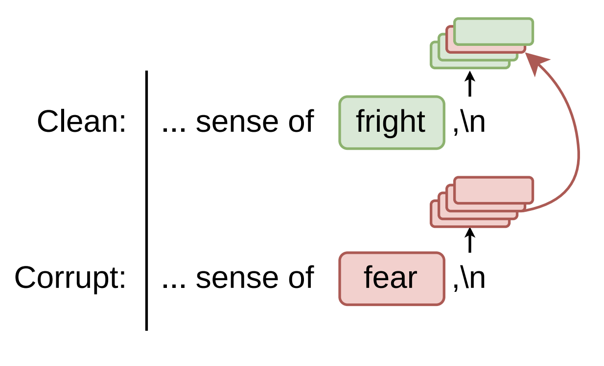
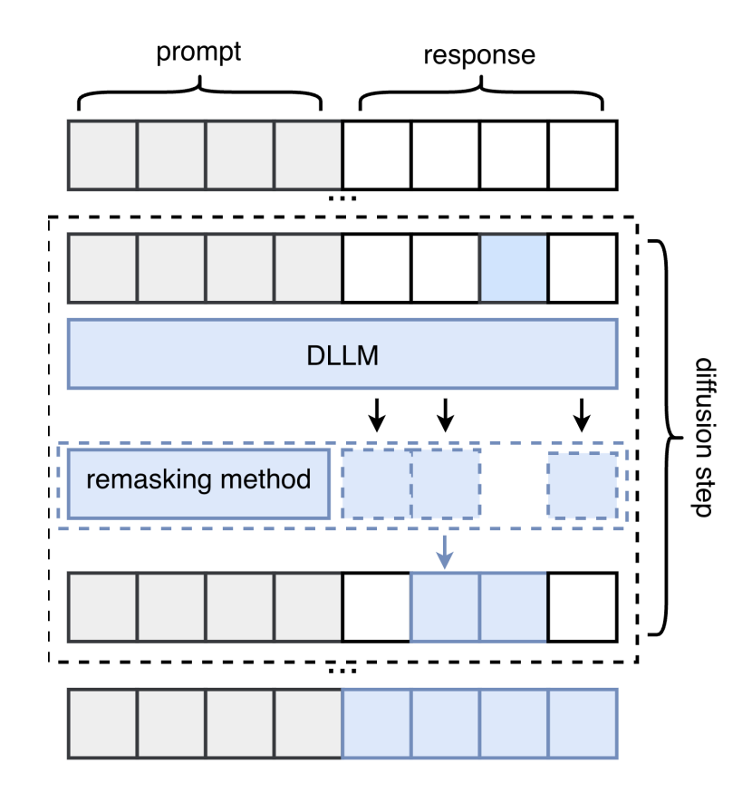
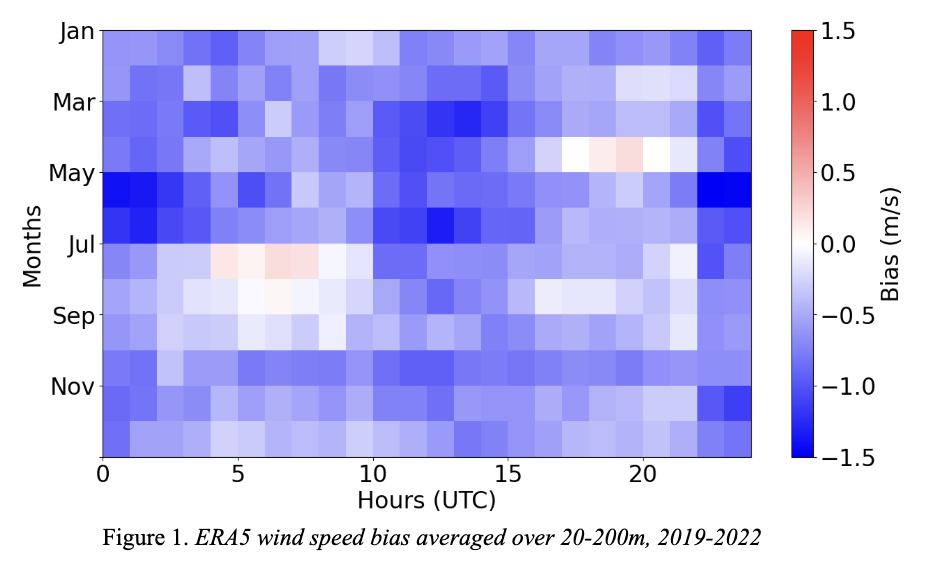
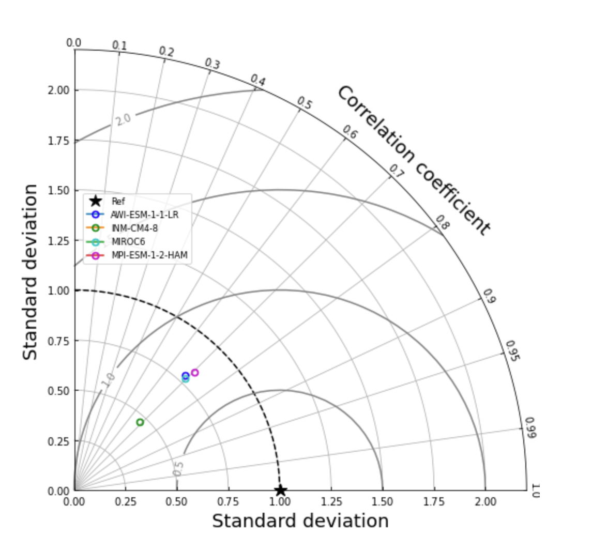

|
Nicole Ma Hi! I'm an undergrad at Stanford studying CS. I'm generally interested in mech interp, reasoning, and systems. I've worked on distillation and hardware-aware ML @ SAIL, spatial reasoning and physical optimization @ Topological, and geophysical modeling @ NASA. |

|
Research |
|
 |
Where's the Plan? Locating Latent Planning in Language Models with Lightweight Mechanistic Interventions
Nicole H. Ma*, Nick Rui* ICML Mechanistic interpretability Workshop, 2026 paper |
|
 |
Optimizing Remasking Schedules for Reasoning in Discrete Diffusion Models
Radostin Cholakov*, Zeyneb N. Kaya*, Nicole H. Ma* ICLR ReALM-GEN and NFAM Workshops, 2026 paper |
|
 |
Ensemble Learning Approaches for Bias Correction in Offshore Wind Resource Assessment
Nicole H. Ma, Brian Colle AMS Annual Meeting, 2024 |
|
 |
Multidirectional Stochastic Modeling of the North Atlantic Jet Stream
Nicole H. Ma NJSHS, 2023 |
|
* Equal contribution |
Awards1st Place ($40k) @ Mercor x Cognition x Etched Hackathon Most Impressive Technical Feat @ Pear VC x Anthropic Hackathon 1st Place Scrapybara Award ($16k) @ Treehacks Hackathon awards: 1st Place @ Google igniteCS Programming Expo, 1st Place @ GameGala, Best Web App @ HackTable, Best AR/VR App @ LightHouse Hacks, Honorable Mention @ HackVH, One Percenter Award @ Project Euler Science fair awards: Finalist in Math/CS @ NJSHS, 1st Place @ JSHS, 3rd Place @ CSEF, 1st Place @ OCSEF, Association of Women in Water, Energy, and Environment Award, NASA Earth System Science Award, the Energy Coalition First Place Award |
|
Design and source code from Jon Barron's website. |